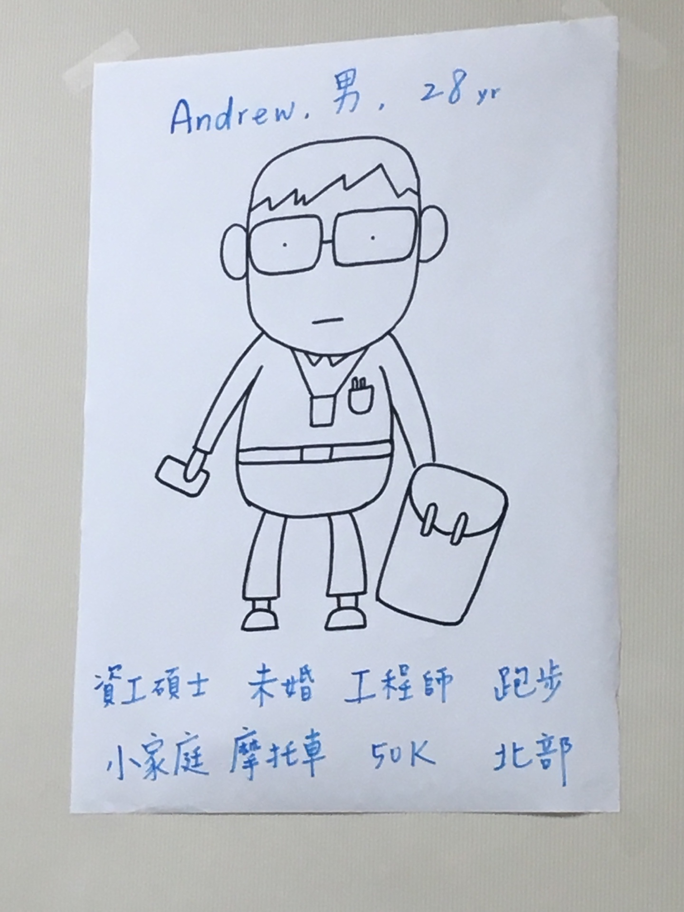
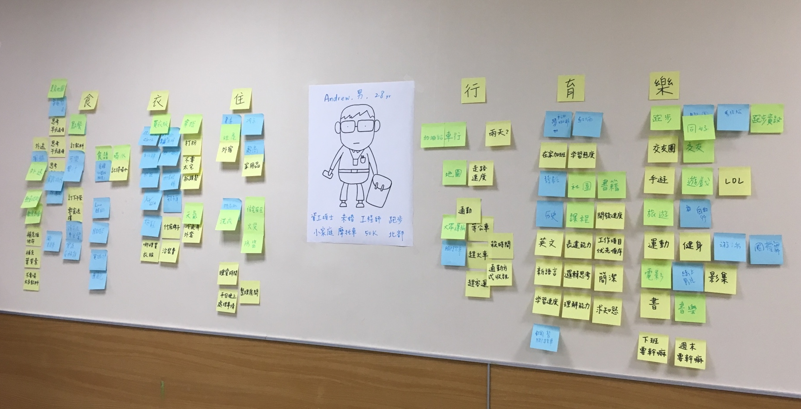
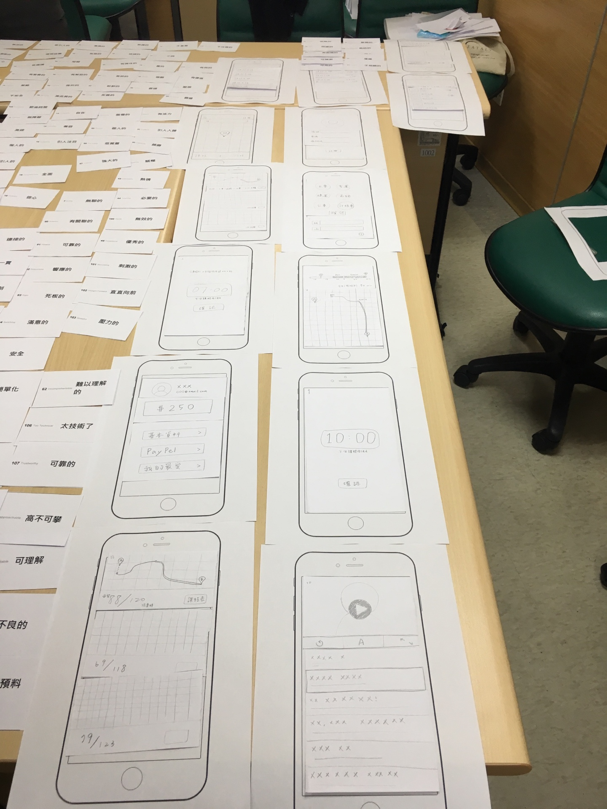
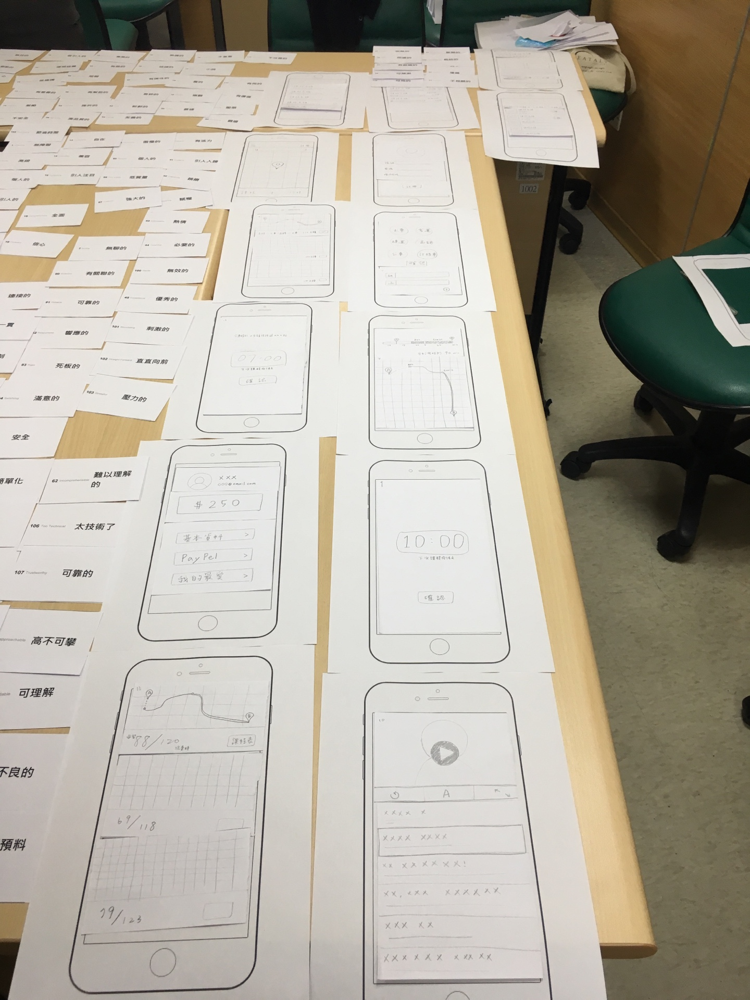
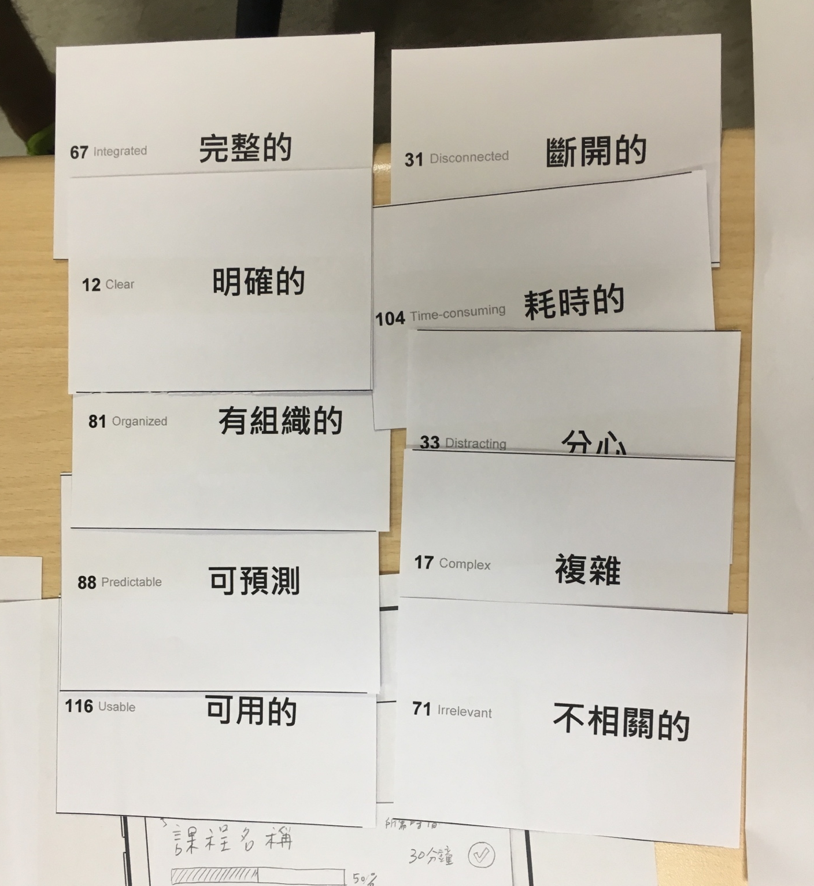

"Learning English In Commutes" Mobile APP
| Column 1 | Column 2 |
|---|---|
| Project Goal | Design an application which allows users to learn English during their daily commutes |
| Features |
|
| Collaborators | Group work |
| My Responsibilities |
|
| UX Methods |
|
| Design Tools |
|
Design Process
Discovery
In the discovery phase, we first tried to identify the intended users we wanted to design for. We discussed about the people we encountered with the most, and then settled down on “computers engineers”.
Next, we decided some detailed information about him, including name, gender, age, education, location, family status, etc. These details enables us to get a concrete image of the person we were designing for.
-Persona- After defining the target users, we started to brainstorm about things that he might do or need in every aspect of his daily life, from food, clothing, housing, transportation, education to entertainment. We used posted notes to recorded and visualized our ideas.We found our ideas converged on commute and learning, for that engineers in Taipei spend a long time on commutes each day while having little time to keep on enhancing their English ability. Therefore, we thought about combining the two, which formed the goal of our APP—learning English in commutes.
We decided the function of the APP to be providing schedules of the learning material (articles, audios or videos) according to the estimated odds times of the commute automatically (calculated by combining the time table of the public transportation).
After defined the persona and the goal, we then began to delineate the Flow Chart and Functional Map.
 -Flowchart-
-Flowchart-
The flowchart elaborated on the processes of the main task, which was the user’s overall interactions with the application through choosing a commute route and learning content according to the scheduled time.
 -Functional Map-
-Functional Map-
We also delineated the Functional Map to define the primary functions of the application, which were divided into four categories: “travel route”, “course content”, "general settings", and "sharing with friends".
Design
 -Paper Prototypes-
-Paper Prototypes-
We drew paper wireframes of every screen in the app, including that of the homepage, methods of transportation, course content, and user profile. In the next step, we cut the elements to arrange them more easily on the screen and explore better ways of placement.
In this part, I was in charge of designing half of the interfaces, which included setting commute paths and the learning page. I created my assigned interfaces using several English learning applications, maps, and public transportation as references for inspiration.
Evaluation
-Microsoft Reaction Card Method (Desirability Testing)-In the last part of evaluation, we invited a classmate from another group to evaluate our design using the Reaction Card Method by Microsoft.
After listening to our explanations on the design, he had to choose five positive and negative adjectives that best fit his thoughts. The positive words he chose were integrated, clear, organized, predictable, and usable, while the negative words were disconnected, time-consuming, distracting, complex and irrelevant.
Reflection
In designing this application, I became aware of the importance of having a clear functional map. The limited amount of time meant that we thoroughly expanded on the flowchart, but unfortunately left the functional map somewhat lacking in comparison. Later in the interface creation process, we added many more functions than we had originally planned and had to constantly confirm the structure of the app. I believe that was the reason why the negative feedback from the evaluation included the words “disconnected” and “irrelevant”.
Besides the concept of having a clear start, I also found it fascinating to work with people from different backgrounds. Everyone kept coming up with new ideas, such as paid features or adding advertisements, which further enriched our design, and all played a different yet essential role in the design process. I was convinced that each member could be a good designer in their own right, provided that they are equipped with a proper method of design thinking.